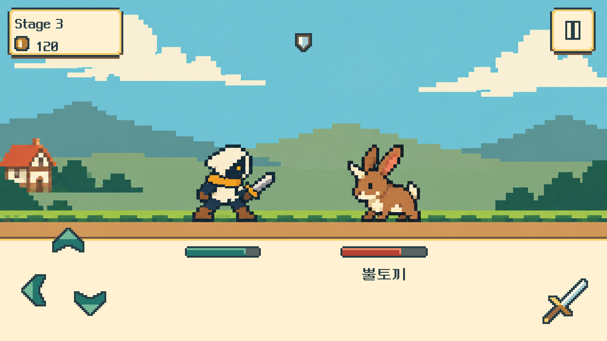
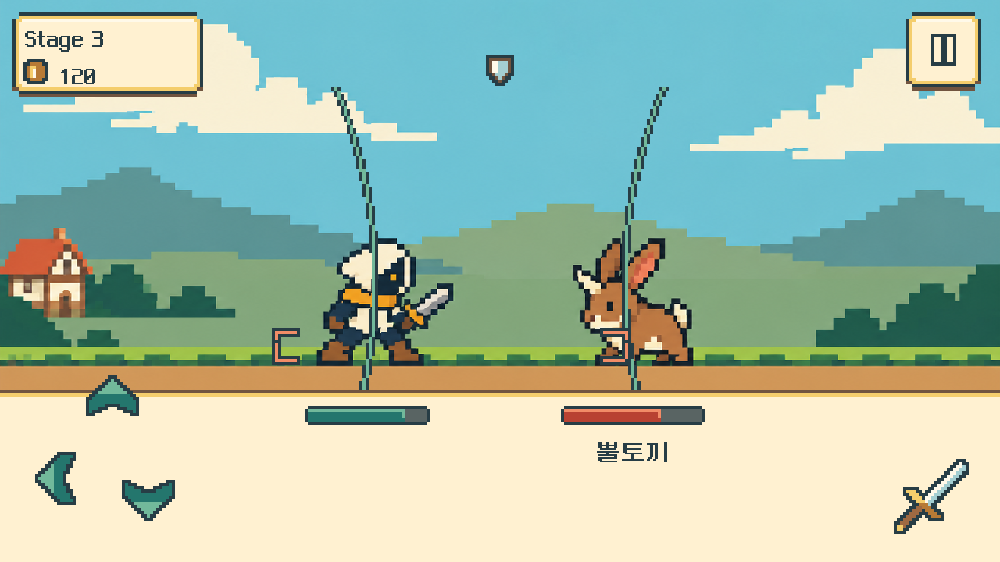
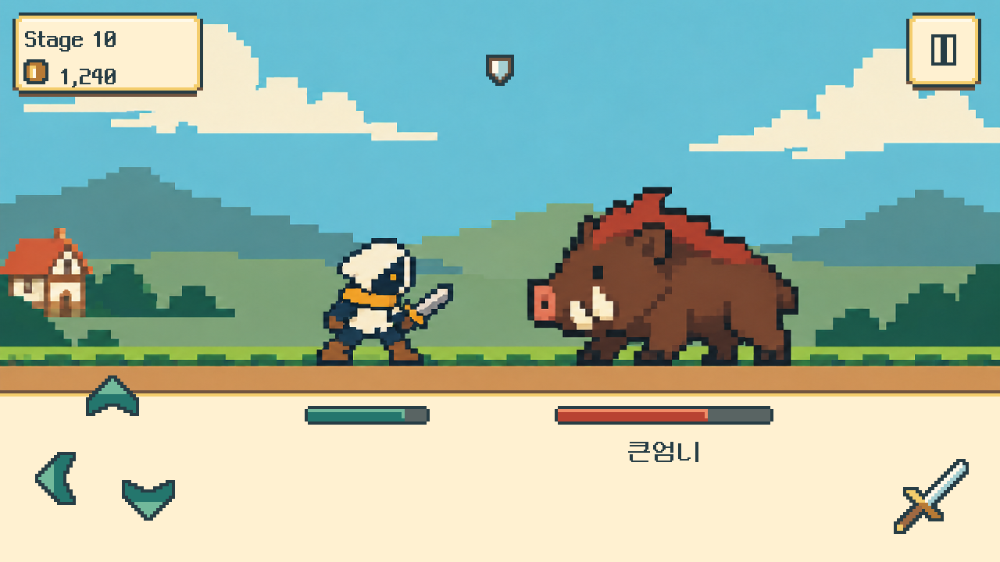
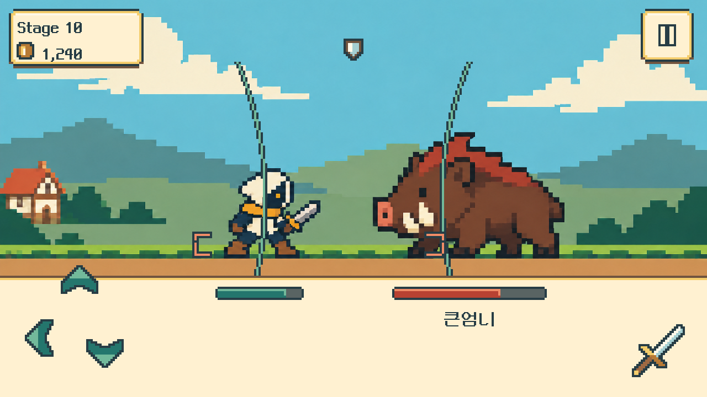
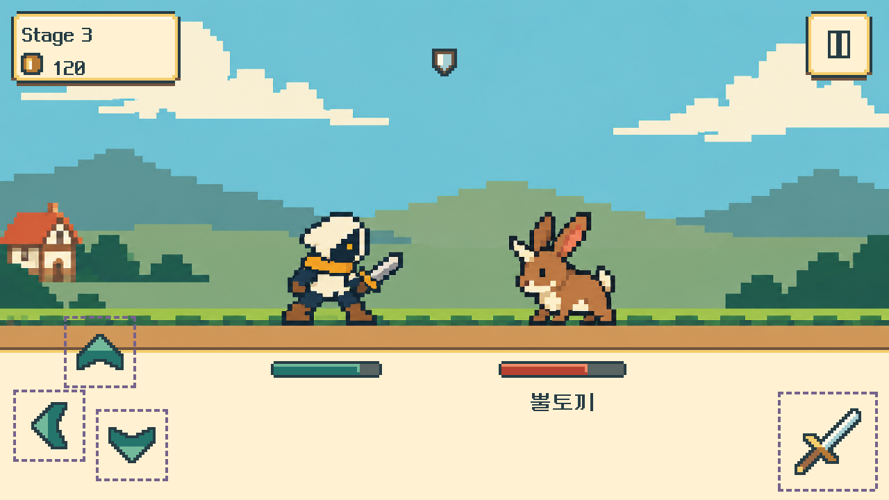
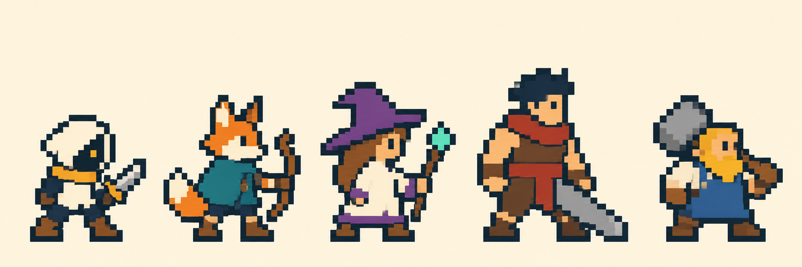
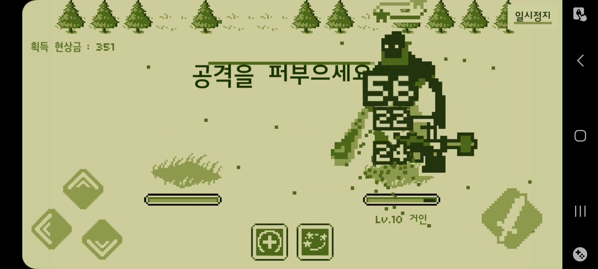
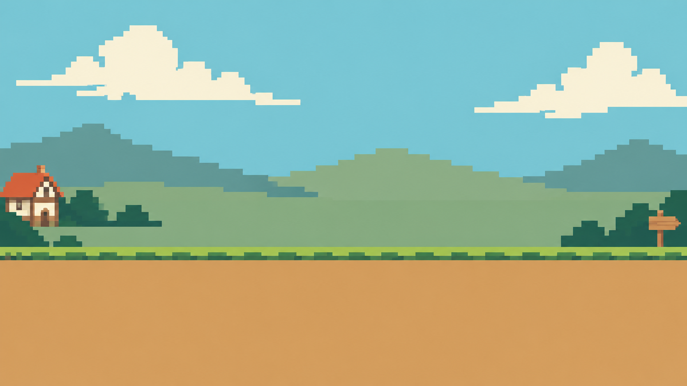

레퍼런스에서 가져온 표현 기준
원작 캡처처럼 제한된 색 단계, 작은 실루엣, 비워 둔 전장 중앙을 기준으로 삼았습니다. 우리 게임의 밝은 판타지 색은 유지합니다.
원작의 실제 원본 스프라이트 해상도는 확인하지 못했습니다. 24~32픽셀 인물·단순 명암은 우리 제작 목표이며 원작의 정확한 수치라고 주장하지 않습니다.
최신 UI·스킬 변경 → 아래 이미지는 초기 전투 시안입니다. 현재 실행 화면은 기획서 상단의 최신 제작 기록에서 확인하세요.
LATEST · PIXEL WORLD V3 + UI V4
플레이어·NPC의 옷 주름과 작은 장식을 줄이고, 배경도 큰 색면으로 정리했습니다. 체력바와 방향키를 포함한 UI도 같은 도트 스타일로 맞췄습니다. 아래는 1280×720 정적 전투 시안입니다.





실행 화면을 예상하기 위한 시안입니다. 캐릭터·배경은 GPT로 생성했고, HUD·체력바·조작부는 기존 배치를 바탕으로 코드에서 도트로 다시 그렸습니다. Unity 캡처나 플레이 가능한 빌드는 아닙니다.
__PIXEL_UI_V4__
원작 캡처처럼 제한된 색 단계, 작은 실루엣, 비워 둔 전장 중앙을 기준으로 삼았습니다. 우리 게임의 밝은 판타지 색은 유지합니다.
원작의 실제 원본 스프라이트 해상도는 확인하지 못했습니다. 24~32픽셀 인물·단순 명암은 우리 제작 목표이며 원작의 정확한 수치라고 주장하지 않습니다.


배경·전투 생성 프롬프트 · 인물 생성 프롬프트 · 아트 검토 · 전투 화면 검토